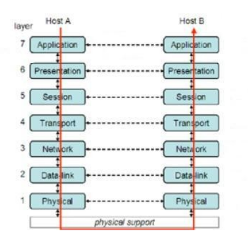

Teoria delle Reti
Il modello OSI , acronimo di Open Systems Interconnection , è un modello per le architetture di rete, organizzato in 7 livelli e stabilito nel 1978 dalla ISO , organizzazione internazionale per gli standard.
Note
ISO è la più importante organizzazione mondiale per definizione di norme tecniche. Svolge funzioni consultive per l’ONU e l’UNESCO; i suoi membri sono gli organismi nazionali di standardizzazione di 164 paesi nel mondo.
Sito Ufficiale ISO: https://www.iso.org/
Link Wikipedia: https://it.wikipedia.org/wiki/ISO
Viste le molteplici implementazioni differenti esistenti all'epoca, la comunità scientifica sentì la necessità di organizzare un modello standard di riferimento per l'interconnessione di sistemi aperti e avviò il progetto OSI ( Open Systems Interconnection, ISO 7498).
Il modello ISO/OSI è costituito da uno sequenza di 7 livelli attraverso i quali viene ridotta la complessità implementativa di un sistema di comunicazione per il networking, muovendosi dal livello fisico, che rappresenta il mezzo fisico di propagazione dell'informazione al livello applicazione, che rappresenta l'interfaccia del modello verso le applicazioni che lo utilizzano.
E' importante notare che il modello OSI è un modello! Cioè è un impianto assolutamente teorico. Le operazioni descritte non avvengono nella realtà, ma sono da considerare piuttosto uno schema, un suggerimento di come si potrebbe fare per implementare una connessione.
Come vedremo successivamente, le implementazioni reali del modello OSI differiscono anche sensibilmente dalla teoria, ma l'importanza del modello rimane come standard da cui partire per l'implementazione e come linea guida per le interconnessioni.
Struttura e livelli OSI
Il modello OSI è strutturato in sette livelli, ciascuno dei quali implementa uno specifico compito del modello, identificato tramite uno specifico protocollo di comunicazione.

Dati due nodi A e B, sui quali immagineremo esserci due software pronti a comunicare tra loro, il modello OSI stabilisce una procedura di elaborazione dei dati in transito fra i due nodi.
Ogni livello rielabora i dati secondo la sua necessità, scambiando eventualmente informazioni con il corrispondente livello paritario nell’altro nodo, ma non con gli altri: ciò conferisce modularità al sistema e semplicità di implementazione e re-implementazione.
Elaborati i dati, essi vengono dunque passati al livello successivo, che li tratterà a sua volta, aggiungendovi eventualmente opportune informazioni relative al compito del livello in questione e colloquiando con il livello corrispondente.
Questa tecnica di gestione dei dati viene definita incapsulamento ed è una caratteristica alla base della formulazione del modello OSI stesso.
Vediamo una descrizione puntuale dei livelli del modello OSI. La descrizione parte dal numero 7 poiché si immagina una comunicazione che parte da una applicazione attiva nell’host A che ha volontà di comunicare con un’altra nell’host B.
Il livello di applicazione é il livello più alto del modello OSI. Nella teoria del modello dunque, è quello progettato per fornire un insieme di interfacce comuni alle applicazioni , che permetta alle stesse di comprendere come utilizzare i servizi della rete quali ad esempio il collegamento, il trasferimento file, la gestione dello scambio di messaggi, l’elaborazione delle richieste.
Il livello di presentazione si occupa del formato dei dati per la comunicazione lungo la rete. In particolare si occupa di uniformare le trasmissioni, codificando i dati da inviare in codice ASCII. Il livello di presentazione, oltre a fornire un sistema di codifica unico (condiviso) per tutte le trasmissioni, effettua, se possibile, anche una compressione per ridurre il volume dei dati da trasmettere.
Il livello di sessione permette che due parti gestiscano una conversazione in corso, che viene appunto definita sessione. Il corretto funzionamento di questo livello implica che le parti possano scambiarsi dati fra di loro per tutta la durata della sessione.
L’obiettivo è quello di permettere un trasferimento di dati trasparente e, se necessario, affidabile (implementando anche un controllo degli errori e delle perdite) tra due nodi.
Esso si occupa di identificare univocamente il punto di partenza e il punto di arrivo di una comunicazione, definita connessione.
Si occupa inoltre di effettuare la frammentazione dei dati provenienti dal livello superiore in pacchetti, detti segmenti e trasmetterli in modo efficiente usando il livello rete ed isolando da questo i livelli superiori.
Questo livello è uno dei più importanti nella comunicazione poiché si occupa di stabilire il percorso per andare dal mittente al destinatario: questo processo viene definito routing.
Per rendere possibile il routing, il livello di rete si occupa dell’ indirizzamento , ovvero della possibilità di distinguere i dispositivi fra loro e di raggrupparli opportunamente.
Durante il calcolo del routing infine, il livello di rete gestisce anche il problema delle congestioni e cioè cerca di calcolare i percorsi adatti in modo da evitare che troppi pacchetti arrivino allo stesso router contemporaneamente.
La sua unità dati fondamentale è il pacchetto.
Questo livello si occupa di trasformare i dati da inviare da informazioni digitali a segnali adatti al livello fisico presente (cavo, wifi, etc.). Tipicamente questi pacchetti vengono definiti frame , provvisti di header (intestazione) e tail (coda), usati anche per sequenze di controllo.
Questo livello si occupa anche di controllare il flusso di dati: se il mittente è più veloce del destinatario, regola la frequenza di invio dei pacchetti per permettere al destinatario di non sovraccaricarsi di dati e perdere parte del carico.
Il livello fisico si occupa di controllare l’hardware, i cablaggi e tutte le strutture materiali che implementano la rete e i dispositivi che permettono la connessione.
In questo livello si decidono, tra le altre cose:
- Le tensioni scelte per rappresentare i valori logici
- La durata in microsecondi del segnale elettrico che identifica un bit
- L'eventuale trasmissione simultanea in due direzioni
- La forma e la meccanica dei connettori usati per collegare l'hardware al mezzo trasmissivo